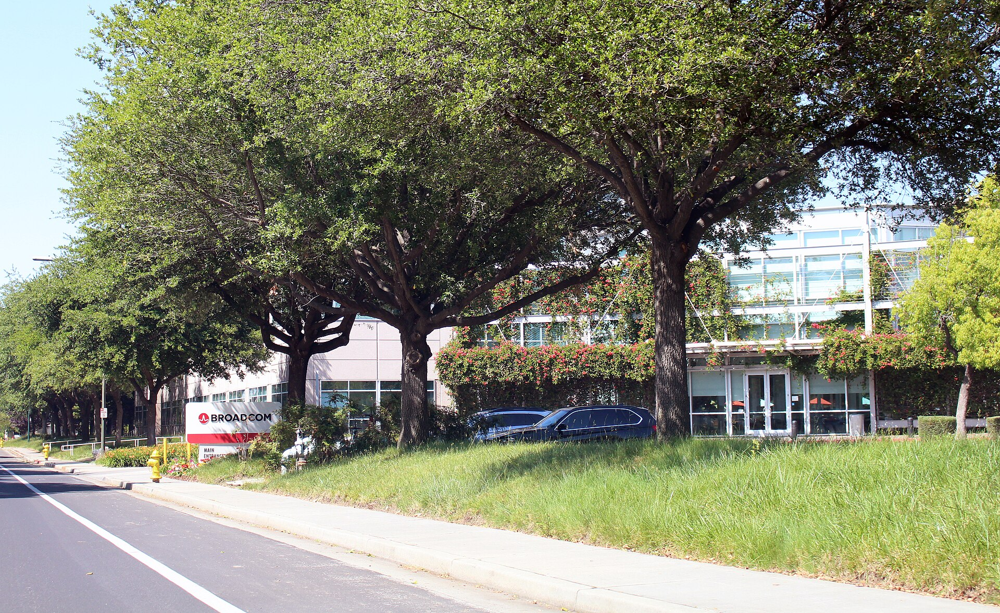
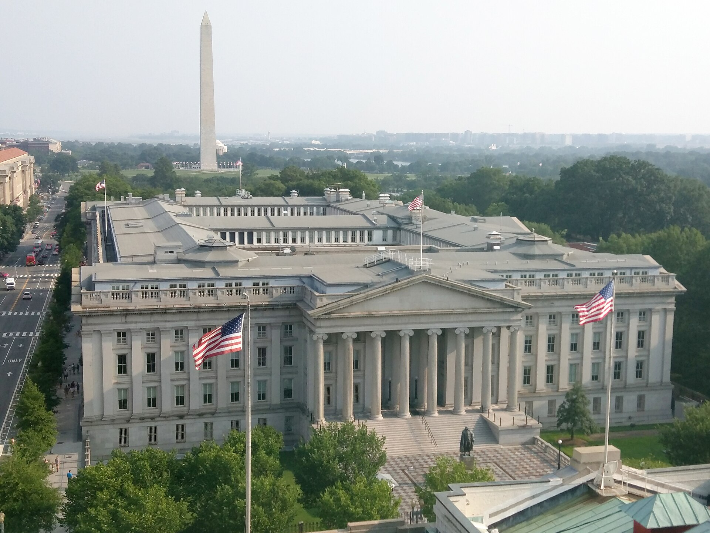

Vol. I · No. 93 · Saturday, August 22, 2026 · 21 items · ~15 min read
The profession is taking fewer of the graduates it has never had more of, Washington set a date to squeeze Tehran, and the long bond gave back everything Treasury bought it.
Law & the profession · Washington
Big Law's incoming classes are shrinking for the first time since 2014
One Manhattan West, the Hudson Yards tower that houses Skadden, Arps, Slate, Meagher & Flom. Firms of more than 500 lawyers took 7.5 percent fewer entry-level associates out of the class of 2025. — Wikimedia Commons
Firms with more than 500 lawyers hired 7.5 percent fewer entry-level associates out of the class of 2025 than out of the class before it, the first decline in Big Law entry-level hiring since 2014, according to data that Above the Law broke out on Friday. In raw terms roughly 540 fewer graduates landed at the largest firms. Total entry-level jobs across the whole market fell 7.7 percent to 32,619.
The headline employment rate held up only because the class shrank faster than the job pool did. The class of 2025 graduated 36,206 people, down 7.0 percent, and reported 2,700 fewer jobs than the class before it, finishing at a 92.8 percent employment rate, just under the class of 2024's record 93.4 percent and still the second highest NALP has recorded. The paradox underneath is that Big Law has never employed a larger share of a graduating class. More than one in five employed graduates went to a firm of over 500 lawyers, and roughly one in four of everyone entering private practice once firms of 251 to 500 lawyers are counted. The other exits narrowed at the same time: federal hiring outside judicial clerkships fell from about 1,100 to about 690, a 37 percent drop, and public interest work fell from 9.7 percent of all jobs to 9.0 percent, more than 475 fewer graduates.
Behind the shrinking door, the queue is growing. LSAC counts 82,484 applicants to ABA-accredited law schools this cycle, up 8 percent after an 18 percent surge the year before, the largest pool since the Great Recession. What the data does not establish is cause. Above the Law frames the question as whether AI is eating the routine junior work that used to justify a large incoming class, and that remains inference rather than finding. The nearer mechanism is on the record and is not speculative: a December Citigroup and report found a majority of firms plan, through 2027, to .
"You're looking at a significant increase over multiple years. It means you have hyper competition to get into law school."
— , Spivey Consulting, to Reuters, August 20
World · Tehran · cross-spectrum LLLCR
Iran's military chief promises "devastating responses" as China's Iranian crude imports collapse by a third
Iran's armed forces chief of staff, Major General , told the acting defense minister on Friday that Iranian forces would meet new threats with "revolutionary, crushing, regret-inducing and devastating responses," in a message carried by Iranian state media. He said the forces hold "comprehensive, smart, and up-to-date readiness" across land, sea, air, air defense, space and cyberspace. It landed as Treasury Secretary Scott Bessent said he would unveil what he called the toughest sanctions in history at a press conference on Monday, and as Vice President JD Vance said the war was shifting to a new phase.
The measurable part is the oil. estimates China's imports of Iranian crude fell to 534,000 barrels a day in August from 823,000 in July, a collapse in the outlet that takes more than 80 percent of Iran's shipped oil. Kpler's senior crude analyst, Muyu Xu, wrote that buyers "could face virtually no new Iranian supplies available for late-September delivery onwards since no laden Iranian tankers have so far managed to break through the US blockade," with roughly 40 million barrels floating off Malaysia and most of it already promised. CENTCOM counted 68 commercial vessels redirected, three disabled and two boarded as of Friday, with more than 20 warships enforcing the cordon. Seven commodity ships crossed the Strait on Thursday against a normal baseline near 73, none carrying LNG, as traffic shifted to the Omani corridor. Brent settled Thursday at $93.78, its highest close since July 24, and finished the week up more than 5 percent; Friday's print is reported anywhere between $93.01 and $94.80 depending on the tracker, so read the week, not the day. on third countries are the announced mechanism.
Markets & Deals · New York
ICE takes its $6.2 billion MarketAxess bridge to zero and replaces it with a certain-funds revolver
Intercontinental Exchange told the SEC on Friday that the $6.2 billion 364-day it committed on July 29 to fund its purchase of was "permanently reduced from $6.2 billion to $0 on August 20, 2026." Three pieces replaced it: $3.73 billion of senior unsecured notes issued on Aug 20, a new $2.0 billion delayed-draw term loan with Bank of America as administrative agent, and $1.5 billion of new revolving commitments created by the Fourteenth Amendment to ICE's 2014 credit agreement, with Wells Fargo as agent. The notes came in four tranches: $1.25bn of 4.700 percent 2029s, $1.10bn of 4.900 percent 2031s, $650m of 5.150 percent 2033s and $750m of 5.400 percent 2036s.
Two terms carry the filing. The new revolving commitments are drawable "subject to limited conditionality provisions" during a defined MarketAxess , after which ICE may elect to convert them to general corporate purposes. And the is split: only the 2033s and 2036s come back at 101 plus accrued if the acquisition fails, while holders of the 2029s and 2031s "will not be entitled to any special mandatory redemption right," leaving the near tranches as permanent capital regardless of the deal. The amendment also puts a price on saying no, at term SOFR plus 0.750 to 1.375 percent for consenting lenders against 0.875 to 1.500 percent plus a 10 basis point credit spread adjustment for those who declined to extend. Sullivan & Cromwell and Morgan Lewis advised ICE; Weil advised MarketAxess. The outside date is July 29, 2027, with two automatic six-month extensions if regulatory clearance is still outstanding.
Artificial Intelligence
Compute financed off balance sheet, and consent by default.
AI · San Jose
Broadcom is sounding lenders on as much as $80 billion to build Anthropic's chips

Broadcom's headquarters in San Jose. The raise would extend a $35 billion compute partnership struck in June with Apollo and Blackstone. — Wikimedia Commons / Coolcaesar, CC BY-SA 4.0
Broadcom is in discussions with lenders over $70 billion to $80 billion of debt for a chip-financing arrangement whose beneficiaries include Anthropic, CNBC reported Friday, citing people familiar with the talks. Lenders are working toward a senior tranche of roughly $45 billion and a of about $35 billion, both figures still moving. Bloomberg's Thursday account of the same raise put the junior piece nearer $30 billion against a senior secured tranche of $60 billion to $70 billion, with a total that could reach $100 billion. Both versions are printed here because the number has moved twice in two days.
The money would flow through a , mirroring a $35 billion structure Broadcom unveiled in June with and Blackstone to expand Anthropic's computing infrastructure; both firms are in discussions to participate again. The architecture is the story rather than the headline number. Chipmakers, private credit funds and banks are building vehicles collateralised against expected future compute demand instead of putting AI infrastructure on the technology companies' own balance sheets. Anthropic is separately preparing a listing its bankers expect to match or beat SpaceX's record raise of $75 billion at pricing, with Citigroup joining Morgan Stanley, Goldman Sachs and JPMorgan at the top of the syndicate, so the same company is financing its silicon in the private credit market while assembling the largest first-time share sale ever attempted.
AI · San Francisco
A Twitch streamer sues Amazon over AI training, and the platform's own product chief supplied the quote
Warren Pandiscia, a Connecticut streamer with more than 900 followers, has filed a 37-page proposed class action against Twitch Interactive and Amazon in the Northern District of California, Courthouse News reported Friday. The complaint pleads , unjust enrichment, breach of express contract and unfair business practices, and seeks injunctive relief, damages, restitution and . It alleges that rather than "negotiate for lawful licenses or seek permission, defendants accessed the Twitch streams and videos to utilize them as a massive dataset necessary to fuel Amazon's AI products."
The trigger was Twitch's own disclosure. On Aug 12 the platform posted that it had "added a setting that lets you opt out of having your channel content used to train generative AI content models across Amazon," and updated its terms and privacy notice the same day. The setting is per channel and channels are opted in by default, so content from an opted-out user appearing on someone else's channel may still be used. Twitch's chief product officer, , defended the default on a stream that day: "If it was opt-in, nobody would opt-in. That's honestly the answer." Amazon may use streams, past broadcasts, clips, chats, pictures and text, including for "future training of a model developed by Amazon whose purpose is to generate or synthesize text, audio, images or video." Neither party responded to a request for comment. As of Friday night the filing was reported by Courthouse News alone, and this item rests on that single source.
AI · Cupertino
Apple Music makes AI disclosure mandatory and hands the judgment call to the labels
Apple will show a "Made With AI" label on music "materially generated using artificial intelligence" and will require content providers to supply wherever AI made a material contribution, Variety and Music Business Worldwide reported Friday. The move from optional to mandatory is the change; Billboard's Kristin Robinson broke it from an email Apple sent industry partners on Thursday. Apple has said only "later this year" and has not named a launch date.
The regime explicitly captures tracks made on , and it puts the compliance burden upstream: labels and distributors must supply the metadata before a track reaches the platform, which is why Music Business Worldwide headlined it as Apple pushing the onus onto the record companies. The unresolved term is the trigger itself. Apple writes the standard, , and then delegates both the judgment and the exposure for getting it wrong to whoever delivers the file.
Markets & Deals
The curve, an exclusivity clock, and a forced seller's inventory.
Markets & Deals · Washington
The long bond gave back Treasury's rescue, closing the week at 5.273 percent

The Treasury building in Washington. Two sessions erased the entire rally that Wednesday's expanded buybacks had bought. — Wikimedia Commons
The 30-year Treasury closed Friday at 5.273 percent, up more than three basis points on the day and back above where it stood before Treasury Secretary expanded on Wednesday. The 10-year finished at 4.734 percent and the two-year at 4.232 percent, both higher on the session, leaving twos to tens near 50 basis points and tens to thirties near 54. Thursday did the damage, with tens and thirties each up more than five basis points. No coupon auction settled Friday; the week's long-end supply was Thursday's 30-year TIPS reopening at a 2.973 percent real yield, the highest for the term in nearly 25 years.
Bessent said the operations would get larger: "We routinely do buybacks, and we're going to increase the size of the buyback ... I would note that it could be more than the $4 billion per issue." The market's read is that the buying is fighting a term-premium problem rather than a liquidity one, and the same repricing is running everywhere at once, with Japan's 10-year at a three-decade high, France's 30-year at its highest since 2008 and the German 30-year at its highest since 2011. Paul Stanley of Arca framed Friday as the setup to , where gives his first keynote as Fed chair on Aug 28: "It seems as though Warsh wants the market to do the tightening for the Fed, and that's really what is happening with the recent surge in bond yields."
Markets & Deals · Sydney
Amwins, Dragoneer and KKR sign for Australia's Steadfast on the last day of exclusivity
A consortium of , Dragoneer Investment Group and KKR signed a binding agreement on Friday to acquire Steadfast Group, Australia's largest general insurance broker network, at A$6.00 a share in cash. InsuranceAsia News put the headline value at A$7.7 billion; Reuters reported the deal at US$5.5 billion, and a same-day InsuranceAsia News piece carried US$5.4 billion. The spread turns on equity against enterprise value and on the conversion date, so all three are printed. Steadfast shares went into an ahead of the announcement. This was the largest transaction announced anywhere in the window by enterprise value.
The date was not a coincidence. Friday was the expiry of the the board had granted the consortium to finish diligence, itself extended to that date only on Aug 18 after an earlier extension on Aug 3. KKR joined on July 14, when Reuters valued the approach at US$5.3 billion; the first approach was reported June 11. The transaction will run as a , the court-supervised Australian route requiring a shareholder vote and judicial sanction. The scheme implementation deed was not public on Friday, so the break fee, the FIRB condition, the independent expert and the advisers are not yet on the record.
Markets & Deals · Chicago
Citadel says it has unwound 80 percent of the risk it bought out of Aschenbrenner's blown-up fund
In a letter to investors dated Friday, said Citadel has unwound more than 80 percent of the in the portfolio it bought from Situational Awareness, through more than 100 totalling more than $4 billion in market value, including the year's single-session records in 10 separate names. "Our ability to distribute this risk was central to our investment thesis," Griffin wrote. "These moments highlight our ability to quickly evaluate complex risks, deploy capital with speed and conviction, and execute with precision."
Read the figure carefully: 80 percent measures risk, not assets sold, so it does not fix the remaining book's market value, and the coverage split on which number to lead with, CNBC on the risk and Bloomberg on the $4 billion. Citadel entered discussions with the fund on July 29, and CNBC reported the next day that Situational Awareness had been forced to liquidate its entire public equity book after steep losses. The fund is run by , 25, a former OpenAI researcher, and was built on concentrated long positions in the AI trade against shorts in some software names. The trade Griffin described is not a view on AI equities at all. It is a bid for a distressed seller's inventory, priced on the confidence that Citadel could place it.
Markets & Deals · Atlanta
Gray Media cuts 300 basis points off its most expensive debt with a $750 million first-lien refinancing
Gray Media issued $750 million of 7.500 percent senior secured due September 2034 at par on Friday, under an indenture dated the same day. Proceeds redeem $675 million of the company's 10.500 percent first lien notes due 2029, repay $21 million of revolver borrowings, and cover fees, the call premium and accrued interest. The coupon falls 300 basis points and the maturity moves out five years. Interest runs from Friday, payable each March 15 and September 15 beginning in 2027.
The call package is where the negotiation shows. The notes are non-call until September 2029, with redemption before that date, and carry two escape hatches: an for up to 40 percent at 107.500 percent using equity proceeds provided 60 percent stays outstanding, and a portable 10 percent annual call at 103 percent usable no more than three times in total. The covenant package limits additional debt, restricted payments, liens, affiliate transactions, asset sales and the designation of , each subject to what the filing calls "a number of important exceptions and qualifications." Acceleration requires holders of 25 percent of the series. Initial purchasers were not named in the 8-K.
Law & the Courts
One sentence from the Chief Justice, and a cashier's check in Biscayne Bay.
Law · Washington
Roberts freezes the ballroom order in one sentence, with the East Wing 65 percent built
The Supreme Court. The Chief Justice acted as circuit justice for the D.C. Circuit, hours before the district court's order was to take effect. — Wikimedia Commons
Chief Justice John Roberts, sitting as for the D.C. Circuit, entered a one-sentence on Friday afternoon in National Park Service v. National Trust for Historic Preservation, No. 26A203, freezing Senior District Judge Richard Leon's order hours before it was to take effect. The order carried no vote count, no reasoning and no noted dissent, and gave no indication of when the full Court might act. Leon had barred most above-ground construction on the White House East Wing project while allowing underground security work to proceed.
The D.C. Circuit affirmed Leon on Aug 7, with Judges Millett and Garcia concluding that Congress "has exclusive authority to regulate the construction and demolition of White House structures" and has appropriated nothing for the ballroom, over a dissent from Judge Rao on standing. The administration applied on Aug 14. Solicitor General told the Court the work was "vitally required by national security" and reported a "250-person crew working 20 hours a day, 7 days a week," with the project "65% complete in its entirety." Tad Heuer of Foley Hoag, for the , answered that the government's "efforts to foil judicial review and arrogate Congress's exclusive powers should not be rewarded." Leon's order has never once taken effect at any stage of the case, and construction has not stopped.
Law · Washington
OLC says the Foreign Service Grievance Board's final word is unconstitutional, and gives it to the Secretary
The issued an opinion for the State Department's Legal Adviser on Friday concluding that the statutory provisions giving the Foreign Service Grievance Board final decision-making authority "violate Article II and cannot be enforced." Since the Foreign Service Act of 1980 the board has been able to reverse discipline and reinstate members of the Foreign Service terminated by the Secretary of State. As the Justice Department put it, "the President and the Secretary of State were powerless to overrule the Board's decision."
Assistant Attorney General , who signed it, framed the holding as restoring a chain of accountability: "Accountability for American foreign policy flows from the people to the foreign service through the President ... and his Secretary of State. Our advice today restores that essential through-line." The remedy is structural rather than a wind-down. The board may keep hearing grievances exactly as before, but its rulings become recommendations and the Secretary keeps the final call. Reporting on the opinion traces the reasoning to and to Trump v. Slaughter; the slip opinion's internal citations were not independently confirmed here. Outside the Department's own release the item drew thin coverage, and no wire pickup surfaced.
Law · Los Angeles
TikTok pays $400 million to end DOJ's children's privacy case, with $100 million riding on a vacatur
TikTok, ByteDance and affiliated entities agreed on Friday to pay $400 million to resolve the United States' litigation under the , in what the Justice Department called "one of the largest recoveries ever obtained in a COPPA case." The structure is the interesting part. TikTok pays $300 million immediately, and the remaining $100 million only "upon entry of an order " entered against TikTok's predecessor, .
The case was filed in 2024 in the Central District of California and handled by the Civil Division's Enforcement and Affirmative Litigation Branch on referral from the Federal Trade Commission, on allegations that TikTok let millions of under-13 users onto the platform and collected their information without verifiable parental consent. DOJ's stated reason for settling rather than litigating is that since the complaint TikTok "has undergone significant changes to its ownership, management, compliance functions, and privacy practices." Associate Attorney General Stanley Woodward called the outcome "a major victory for American children and parents"; Assistant Attorney General said it "reflects substantial progress." The claims are allegations only and there has been no determination of liability. The settlement agreement itself was not on the public docket Friday.
Law · South Florida · Miami
A $313 cashier's check ends a North Bay Village candidacy, and the Third DCA affirms in ten days
Florida's summarily affirmed on Friday in Thompson v. North Bay Village, No. 3D26-1785, holding that a would-be village commissioner who tendered his $313 by bank cashier's check about an hour before the qualifying period closed was properly disqualified. The statute requires "[a] properly executed check drawn upon the candidate's campaign account." Chief Judge Scales wrote, joined by Judges Fernandez and Lindsey. There was no dissent.
The appeal was a preemption argument and it failed on silence. Zachary Thompson contended that section 5.07 of the charter, which requires only that the fee "be deposited with the Village Clerk," displaced the statute under section 100.3605(1), which applies the Election Code to municipal elections absent a conflicting charter or ordinance. Quoting the trial court, the panel answered that while the charter sets the amount, and in fact raises it above the statutory minimum, it "remains silent as to where the payment must come from," and silence is not a conflict. The court reviewed the question de novo and disposed of it by . Weiss Serota Helfman Cole & Bierman appeared for the village and the clerk, The Burton Firm for Thompson. The complaint was filed Aug 11, final judgment entered Aug 19 and the opinion issued Aug 21, ten days start to finish against a November ballot.
The World
A second drone, a tender document, and a file closed without charges.
World · Kryvyi Rih · cross-spectrum LLLC
A second drone hit the Kryvyi Rih mall half an hour later, when the rescuers were inside
Kryvyi Rih, the iron-ore city of roughly 600,000 in Dnipropetrovsk Oblast that is also President Zelensky's hometown. — Wikimedia Commons
Russian attack drones struck the Sunny Gallery shopping centre in on Friday afternoon, then struck it again roughly 30 minutes later, when firefighters and medics were already inside. Zelensky, whose hometown it is, wrote on Telegram that "the attack drones struck in two waves: half an hour after the first strike and the resulting fire, there was a second strike targeting emergency responders," and called the attacks "nothing less than terrorist acts." Oleksandr Vilkul, head of the city's defence council, said the second strike used a flying at extremely low altitude.
The toll moved four times inside a day and should be read as a range. CNN first reported at least six killed and more than 100 wounded before revising to at least 14; the Washington Post carried 14; AP and CBS carried 15; the Kyiv Independent carried at least 16 killed and more than 130 injured, including 23 children. , the EU's high representative, called the strike "terror by design" and evidence of "the absolute and utter depravity of Moscow's war," and said the bloc would answer with the most far-reaching Russia sanctions listings since the war began. Russia launched 135 long-range strike drones at Ukraine that day by the Institute for the Study of War's count. A is a distinct category in the law of armed conflict, and every verified tier reporting Friday used the term.
World · Jerusalem · cross-spectrum LC
Seven Western governments tell E1 bidders they risk "serious breaches of international law"
Israel's Ministry of Construction and Housing has published tenders covering part of a 3,401-unit plan for , the corridor east of Jerusalem, with 1,234 already issued for developers to bid on. Bidding companies were cautioned of "legal and reputational consequences, including the risk of involving themselves in serious breaches of international law." Bids close on Oct 19, one week before Israel's Oct 27 elections.
The United Kingdom, France, Germany, Italy, the Netherlands, Norway and Canada called the publication "unacceptable" and said it would undermine a two-state outcome by "driving a wedge" through the West Bank. The count has grown across two days, from four European states on Thursday to seven on Friday, with one European outlet reporting six, so take the Friday figure with the earlier one noted. European Commission President wrote that the decision "is unacceptable. We have long opposed this step." The United States did not join. Asked specifically about E1, a State Department spokesperson said only that "the US does not support Israel annexing the West Bank," which the Times of Israel reported as a deliberate refusal to condemn the project. Settlements are called unlawful under , which is the provision behind the warning.
World · London · cross-spectrum LC
Britain, Canada and Australia call closing the World Central Kitchen file "shameful"
The United Kingdom, Canada and Australia issued a joint statement on Friday, World Humanitarian Day, calling "shameful" Israel's decision not to pursue criminal charges over the April 2024 strike that killed seven staff in a clearly marked convoy in central Gaza. The dead were three Britons, a dual US-Canadian national, a Pole, an Australian and a Palestinian, killed by drone after overseeing the unloading of a food shipment. The three governments said they had spent more than two years pressing Israel to examine the case thoroughly and hold those responsible to account.
The Israeli military announced on Aug 19 that it would not charge any personnel. Its investigation acknowledged "a series of errors at various levels of command" while finding no "reasonable suspicion of criminal misconduct," and that exact gap between institutional failure and individual liability is what the statement attacks. It is also the seam exists to close. World Central Kitchen called the decision "inconsistent with the full truth and deeply offensive."
Entertainment & EASL
A stay that decided a season, and a fee that prices delay.
Sports law · Denver
A 2-1 Tenth Circuit panel restores the NCAA's eligibility clock, and thousands of players are ineligible again
The Byron White courthouse in Denver, seat of the Tenth Circuit. The panel granted the stay in a three-paragraph per curiam order. — Wikimedia Commons
A divided Tenth Circuit panel granted the NCAA's stay on Friday of the nationwide injunction in Wisne v. NCAA, in what Courthouse News described as "a succinct three-paragraph per curiam opinion." Senior Judges Timothy Tymkovich and Paul Kelly were in the majority; Judge Veronica Rossman voted against. The order says only that "we conclude that appellant has satisfied its burden as to each of these factors," meaning the four governing a stay pending appeal. District Judge had certified a on July 31 and enjoined the age-based rule, then refused to stay her own order.
The NCAA moved within hours. "Effective immediately, the age-based eligibility rules will be implemented as the Division I membership intended," a spokesperson posted. "Class members who were allowed to compete because of the Wisne injunction are no longer eligible to compete." Chief Legal Officer Scott Bearby has called the injunction "egregiously wrong" and argued it seeks to supplant the , by which the plaintiffs are bound. The stay does not touch the dozens of individual restraining orders athletes have won in state courts, including a Louisiana order this week covering at least 16 players, several already in NFL camps, so eligibility now turns on which forum a given athlete found. Ben Kappelman of Dorsey & Whitney acts for the NCAA and Elliot Sol Abrams of Cheshire Parker for the athletes. Sportico described the panel as divided; Bloomberg Law's account did not flag a split.
Entertainment · Sacramento
Paramount meets Bonta on Monday with a $7 million-a-day clock starting October 1
Paramount representatives will meet 's office on Monday to discuss settling the antitrust suit brought to block the $110 billion combination with Warner Bros. Discovery, TheWrap reported Friday. Bonta and eleven other state attorneys general, along with the Writers Guild, are lined up for a March trial. Judge Araceli Martínez-Olguín asked the parties this week to name two potential magistrates to oversee mediation by Wednesday.
The economics brought everyone to the table. From Oct 1, David Ellison owes a of 25 cents a share, $650 million a quarter or roughly $7 million a day, until closing; Paramount has agreed not to close until five days after the trial outcome or June 1, 2027, whichever comes first, against a June 4, 2027 outside date. Ellison has threatened to move Paramount's operations out of California if Bonta does not engage before the clock starts, and Bonta has called that "blackmail." The remedy fight is the familiar one: Bonta wants divestitures, Ellison has offered a pledge of 30 theatrical releases a year, the classic divide. Governor Gavin Newsom said Friday there is "some universal sentiment" for settling out of court, adding, "the question is, is that possible? And what's the best deal?" Paramount's chief legal officer is , who ran the Justice Department's antitrust division.
Sports business · Minneapolis
Marc Stad buys control of the Timberwolves and Lynx at $4.5 billion, a year after Marc Lore won them
, founder and managing partner of , has agreed to become controlling owner and largest shareholder of the Minnesota Timberwolves and the WNBA's Minnesota Lynx by buying the majority of 's stake at a $4.5 billion valuation, ESPN's Shams Charania reported Friday. Sportico frames the same figure as enterprise value. Stad's wife, Elisa Stad, will serve as Timberwolves . Alex Rodriguez stays on as co-owner and, per The Athletic, becomes co-chairman with a larger investment.
Stad was already a significant minority investor under the Lore and Rodriguez group, which is what makes the transaction unusual: control moved sideways within the existing cap table rather than to an outside buyer, and it moved barely a year after Lore and Rodriguez finished a years-long arbitration fight with Glen Taylor to complete their own purchase. The assets are in good order. The Lynx have topped 30 wins three straight years behind Napheesa Collier and rookie Olivia Miles and have led the league for most of 2026; the Wolves retooled around Anthony Edwards, Jaden McDaniels and LaMelo Ball. For a ladder, the Lakers went at $12.5 billion on Aug 12 and Sportico's 2026 NFL average franchise value is $9.34 billion, up 31 percent.
Media law · Austin
Texas appeals court cuts the Sandy Hook punitives to $1.5 million on a pleading filed a month too late
A panel of Texas's Third Court of Appeals in Austin the judgment against Alex Jones on Friday, cutting awarded to Neil Heslin and Scarlett Lewis from more than $45 million to $750,000 each. Chief Justice wrote, joined by Justices Chari Kelly and Maggie Ellis. The 2022 Travis County jury had awarded $2 million each in compensatory damages, $20.5 million each in punitives and a further $4.2 million to Heslin, roughly $49.3 million in all. More than $4.1 million in compensatory damages, plus interest and attorney's fees, survives.
The defect was procedural. Texas caps exemplary damages at $750,000 per plaintiff, subject to a exception where a defendant knowingly commits a felony against a disabled person. The trial judge let the parents amend their damages pleading in late September 2022, more than a month after the verdict, to plead that exception. Byrne held that was too late, because "the new allegations in the amendment were not merely a recasting of existing claims to conform with the evidence but were more like a new cause of action," requiring findings the jury was never asked to make. Every liability finding stood, on defamation, negligence and intentional infliction of emotional distress, as did most of the findings on Jones's discovery conduct. Accounts differ on the arithmetic, Courthouse News describing a cut from over $45 million and wire copy a $50 million judgment reduced to $1.5 million; the components above are the reliable version. The separate Connecticut judgment, reported at more than $1 billion, is untouched.
Compiled by Matthew Yellin · mattyellin.com · Est. May 2026 · A cross-spectrum brief drawn each morning from wires, filings, and the trade press